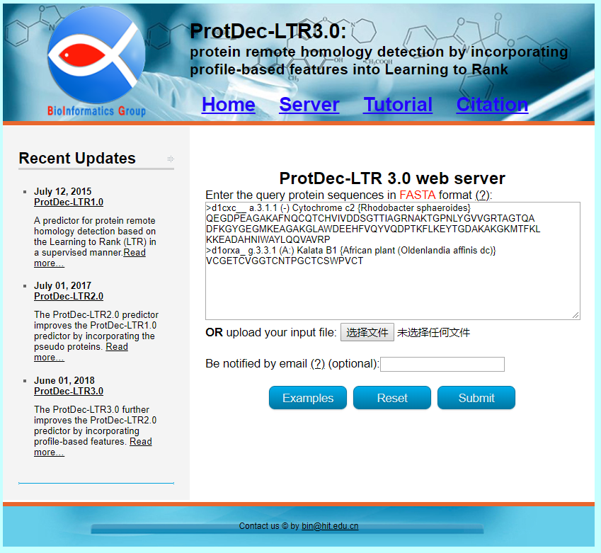
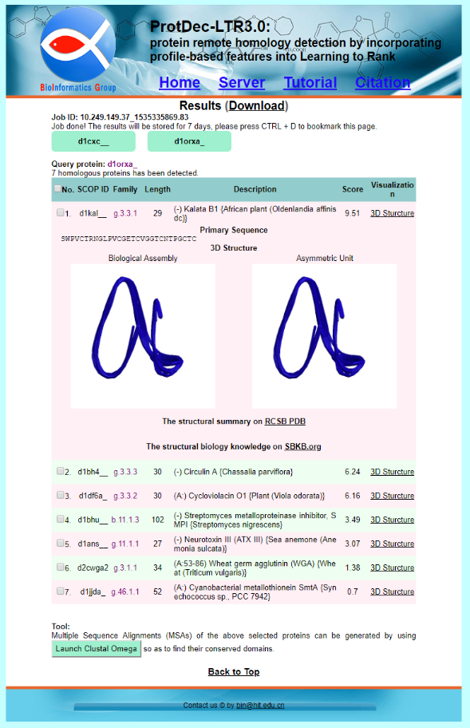

ProtDec-LTR3.0:
protein remote homology detection by incorporating profile-based features into Learning to Rank
Construction of publicly accessible web servers is a key step for developing useful bioinformatics tools. In this regard, the corresponding web server of ProtDec-LTR 3.0 has been established, by which users only need to submit the query protein sequences in FASTA format, and their homology proteins will be automatically detected, and shown. Its detailed steps are as follows.
STEP 1: Clicking the link http://bioinformatics.hitsz.edu.cn/ProtDec-LTR3.0/, you will see the page of ProtDec-LTR 3.0 web server as shown in Fig 1.

STEP 2: Click on the sever button, the server page will be displayed. Type or copy and paste proteins in the FASTA format into the input box, or directly upload by clicking the Browse button.
STEP 3: Click on the Submit button, the detection results will be shown on the screen. For example, when using the two query sequences in the Example window as the input, and then click the Submit button, you will see that for the first query sequence, its 25 homology proteins are detected, and for the second query sequence, its 7 homology proteins are detected, which are completely consistent with experimental observations. The structure information of the homology proteins can be visualized.You will see the page as shown in Fig. 2.
